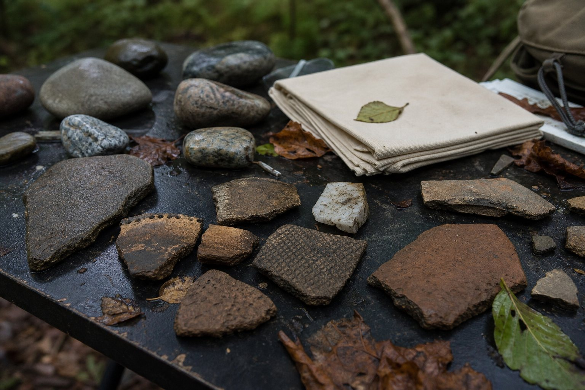
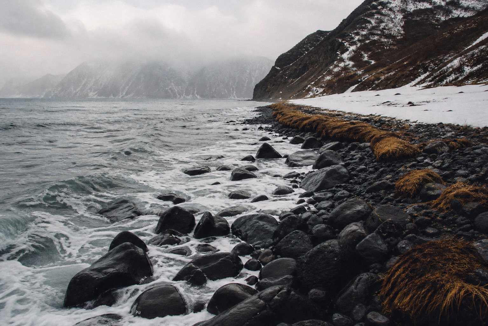
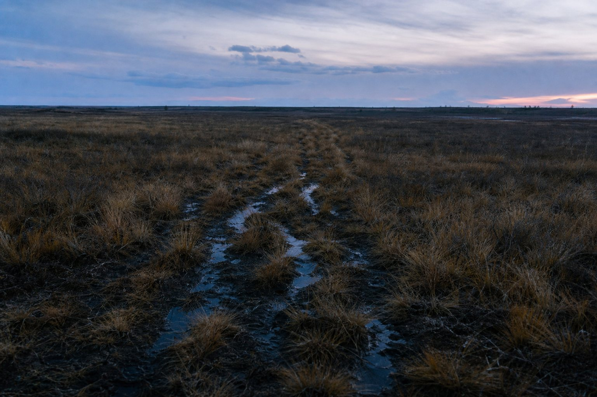

Если спросить “откуда появились народы Дальнего Востока”, хочется получить короткий ответ: пришли отсюда, в таком-то веке, стали такими-то. Но с коренными народами региона так не работает. Нанайцы, ульчи, нивхи, орочи, удэгейцы, негидальцы, эвенки, эвены, чукчи, коряки, ительмены, юкагиры, эскимосы, алеуты и другие народы формировались не как готовые “команды”, а как результат очень долгой истории северо-восточной Азии.
Сначала была не граница, а сеть дорог
Сегодня мы смотрим на Дальний Восток через административные карты: Хабаровский край, Приморье, Сахалин, Камчатка, Чукотка, Якутия, Магаданская область. Для древних людей главными были другие линии: русла рек, сезонные стоянки рыбы, перевалы, морские проливы, оленьи пути, места зимовок и летних переходов. Территория не делилась стенами. Она была сетью маршрутов.
Поэтому “появление народа” здесь лучше понимать как постепенное складывание устойчивого образа жизни: где люди добывали пищу, с кем вступали в родственные связи, на каком языке говорили, какие вещи делали, какие истории рассказывали о земле. Иногда важнее был не дальний переезд, а очень долгое проживание рядом с одной рекой или побережьем.

Амур: река, которая соединяла
Нижний Амур и его притоки — один из ключевых узлов всей истории региона. Для народов амурского круга река была дорогой, календарем, рынком, источником пищи и памятью. Рыба, лодки, зимние и летние перемещения, жизнь у проток и лиманов делали Амур не просто географией, а культурным каркасом.
Современная наука показывает, что у нижнеамурских народов есть очень глубокая связь с местностью. Исследование древней ДНК из пещеры Чёртовы Ворота в Приморье сравнивало геномы людей, живших около 7700 лет назад, с современными группами Восточной Азии. В работе отмечалась близость древних образцов к современным ульчам. Это не значит, что “ульчи существовали в готовом виде семь тысяч лет назад”. Корректнее сказать иначе: в нижнеамурском мире есть глубокая локальная преемственность, поверх которой позже происходили новые контакты, языковые сдвиги и смешения.
Для нанайцев, ульчей, орочей, удэгейцев, негидальцев и части других групп важны тунгусо-маньчжурские языковые связи. Но язык — это не простая стрелка на карте. Он мог распространяться через браки, союзы, торговлю, престиж, сезонную мобильность и соседство. Поэтому у амурских народов мы видим не “чистую линию происхождения”, а плотную историю контактов между местными речными группами, таежными охотниками и пришедшими языковыми влияниями.
Северо-восток: тундра, олени и Берингов мир
Другая часть картины связана с северо-восточной Сибирью, Чукоткой и Камчаткой. После ледниковых эпох люди расселялись по огромным пространствам между Леною, Колымой, Чукоткой, Камчаткой и Беринговым проливом. В этой зоне важны и сухопутные маршруты, и морская граница с Северной Америкой.
Исследование Nature о древней истории населения северо-восточной Сибири описывает несколько древних пластов: ранние палеосибирские линии, последующие северо-восточноазиатские компоненты и связи с населением, участвовавшим в формировании древних берингийцев и предков коренных народов Америки. Для обычного читателя это можно перевести так: северо-восток Азии никогда не был “пустым краем на конце карты”. Это был один из важнейших коридоров человеческой истории.
Чукчи, коряки, ительмены, юкагиры, чуванцы, кереки, алюторцы и другие северные народы складывались в разных экологических условиях. Где-то основой становилось оленеводство и кочевые маршруты, где-то морской промысел, где-то речная охота и рыболовство. Поэтому даже соседние народы могли быть очень разными: один смотрел на год через движение стад, другой — через море, третий — через реку и зимнюю стоянку.


Море тоже было дорогой
Если смотреть только с материка, можно недооценить роль моря. Но для Сахалина, Курильской дуги, Камчатки, Чукотки и Алеутских островов море было не пустотой, а дорогой. Оно давало пищу, требовало особых навыков, создавало связи между берегами и островами. У нивхов амурско-сахалинский мир соединял реку и морское побережье. У эскимосов и алеутов северная морская среда стала основой сложных технологий охоты, лодок, сезонного знания и ориентации в проливах.
Поэтому народы Дальнего Востока нельзя объяснить только “миграцией с запада на восток” или “движением с юга на север”. Здесь было несколько направлений одновременно: вдоль Амура, через тайгу, по побережьям, через проливы, между островами, по речным системам. История похожа не на одну стрелку, а на карту ветвящихся троп.
Почему названия закрепились только недавно
Важно помнить: многие привычные нам названия народов закреплялись в документах сравнительно поздно — в имперское, советское и современное время. Администрация, переписи, школы и научные классификации делали список более жестким. Но живая реальность была сложнее: у групп были самоназвания, локальные имена, родовые связи, двуязычие, смешанные браки и переходы между хозяйственными укладами.
Это не делает современные названия “ненастоящими”. Наоборот, они стали важной частью самоописания и правового признания. Просто за каждым названием стоит не одна дата рождения, а длинная история, которую нельзя свести к школьной формуле.
Что можно сказать уверенно
- Дальний Восток заселялся и переосваивался много раз, начиная с глубокой древности; это была зона движения между Восточной Азией, северо-восточной Сибирью и северной частью Тихого океана.
- Нижний Амур — один из самых устойчивых культурных узлов региона: речная жизнь, рыболовство и локальная преемственность здесь особенно важны.
- Северо-восточная Сибирь и Чукотка связаны с древними процессами, которые важны не только для Азии, но и для истории заселения Америки.
- Языки, генетические связи и культура не всегда совпадают один к одному. Народ формируется через все эти слои вместе.
- Современные коренные народы Дальнего Востока — не “остатки прошлого”, а живые сообщества, которые продолжают менять культуру, язык и формы памяти сегодня.
В этом и есть сила Дальнего Востока: его история не укладывается в простую схему. Здесь разные народы появились не потому, что однажды кто-то провел границу и раздал названия. Они выросли из ландшафта, движения, родства, труда и памяти. Из реки, которая кормила. Из моря, которое учило рисковать. Из тундры, где путь сам становился домом. Из тайги, где знание места было вопросом жизни.